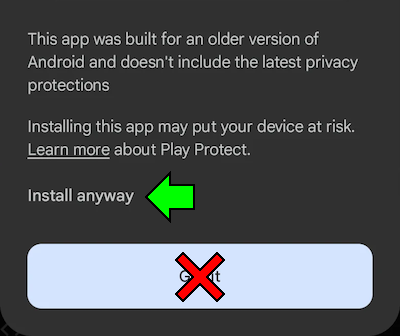

Q&A Page
If you want to ask questions about Sonic Jump Anniversary and game modding, you may find the answers that you are looking for in this page!
Select a question to showcase the answer.
Frequently Asked Questions
The game doesn't boot up and instead showcase a list of applications. What can I do?
If you boot up the game for the first time, you will be granted with the All files access menu with a list of applications present on your device.
Search for Sonic Jump Anniversary and then enable Allow access to manage all files. If you have done it successfully, you can earn the intro jingle in the background.
The files access permission is necessary for saving your game progress, options and map files.
Why does the game have a terrible frame rate?
The game is actually intended to run at such a low frame rate. This is not a glitch, nor a performance issue.
This is something that could be potentially fixed in the future.
For more information, check out the Modding Projects project page.
Why can't I install the game?
Because the game is designed for older Android devices, you may encounter an "Unsafe app blocked" message. When this occurs, press "Install anyway" to proceed.

If the problem still persists, contact Furrican via the Game Jolt/itch.io project page, or via the Furrican Homepage.
Is Sonic Jump Anniversary safe?
Yes. Like many Sonic fangames, this game does not contain any malware or other malicious programs whatsoever.
Can I play Sonic Jump Anniversary on PC?
Of course. To do so, you need an Android emulator (like BlueStacks).
Is Sonic Jump Anniversary a fangame?
No. Sonic Jump Anniversary is actually a mod of an already existing Android port of Sonic Jump.
This Android port was released in 2011 via a service named Puyo Puyo! Sega. This service is provided by SEGA exclusively for Japanese mobile phones.
Why are the music and sound effects different?
The Android port of Sonic Jump has issues with some of its music and sound effects. Some .mid instruments sound too loud.
Because of this, some music and the attack sound effect needed to be replaced by better audio quality.
The game now contains .ogg files, instead of .mid.
Why is the game asking me to access data on my device?
When booting Sonic Jump Anniversary for the first time, the game asks you for permission to access file data.
If you allow permission, a folder named SonicJump will be created in the Documents folder. The SonicJump folder is where your save file is located (sj_save.dat).
However, while the game can export save data, there is currently no way to load save data. Transferring save data is a feature that will likely be available in a future update.
How long does Sonic Jump Anniversary take to be released?
Sonic Jump Anniversary has begun development by late-January 2025 and has a fluid development cycle. Therefore, it took approximately 7 months for the Anniversary mod to be completed.
Can I play Sonic Jump Anniversary with a game controller?
Unfortunately, this game isn't designed to be played with a game controller and there are currently no plans on adding controller support.
When playing on an emulator, you can actually use the arrow keys to play, but your controls are limited in this way.
About Game Modding
I would like to make my own mod. Can I take Sonic Jump Anniversary to work on it?
Yes. Sonic Jump Anniversary is free to be downloaded and modified at your own will.
However, while publishing your own mod, make sure to leave credits to Furrican and GdGohan as original modders.
How to mod Sonic Jump Anniversary?
Sonic Jump Anniversary can be modded by using different software tools.
It's best to mod on PC for better visibility, but you can also mod on your Android device.
To decompile and/or modify the game, you need an APK editor software tool (like APK Easy Tool, APK Editor or MT Manager).
For the sprites, you can change them by using a drawing software tool (like Paint.net, IbisPaint or Paint Tool SAI).
And for more advanced modifications, APK editor tools can decompile the game's code to Smali. If you have the programming skills and knowledge, you can change the game's code to implement additional functions and modifications.
When I try to mod Sonic Jump Anniversary, the game doesn't work or is corrupted. What can I do?
If you have touched the game's code, but have no idea how to solve it, try to decompile the game again with the APK editor tool.
If you want to touch the game's code, make sure to understand the programming logic before making changes in the game's code. Otherwise, the game might won't boot.
For the graphics, make sure to set sprites correctly, or the result won't look pretty.
The game crashes anytime I change text in the .dat files. What can I do?
The .dat files are meant to be modified by using a HEX editor, as they contain values to determines the number of text slots and slot sizes.
Take the text HIGH SCORES, for example. You can see 2 dots before this text. These dots are actually 8-bit values (located in UInt8) which determines the text size.
If the value does not equal the number of characters in the text, the game crashes at certain points. So you need to count the number of characters in the text slot, and then change the value to the coresponded number of characters.
I don't understand Smali language. What can I do?
Smali is a specialised language used to run Android apps. If you want to have a better understading of the game's code, you can convert Smali code to Java by using a Java decompiler software tool (like JADX).
However, some parts of the code won't be decompiled properly, due to compatibility issues. And you cannot change the code when converted into Java to recompile the game directly.
How to prevent my mod to replace the Sonic Jump Anniversary app during installion?
To prevent replacing the Sonic Jump Anniversary app by your mod, you need to change the package name using an APK editor tool. The package name of Sonic Jump Anniversary is jp.co.sega.sonic_jump.monthly.sum.
On a side note, the game cannot be installed when the version code number is lower than the installed app, unless the package name is different than the installed app.
About Game Maps
After using the Map Editor, the stage isn't turned into my own after saving. What is going on?
The problem mostly comes from the CONFIG menu. If the stage name and graphics aren't changed, make sure to configure all settings before saving.
Sometimes, if the stage layout isn't changed despite modification before saving, it is possible that the game hasn't loaded the stage correctly. If so, go back to the Map Editor, load your map and save it again.
Why is there no music in my own stage?
If you have selected a custom music and checked this option, the music takes time to load when playing the stage, because the custom music are stored in an external library.
If you have no music played during stages, you can bring the regular game soundtrack back by saving your map as a .bin file.
I don't remember which file is my stored map and where to find it. What can I do?
The map files are located in the SonicJump subfolder. This folder is most probably located in the Download folder of your internal device.
Also, because map files don't overwrite anytime you save, you might ended up with a lot of duplicated files.
But the file with the biggest number in () has to be the most recent one.
You need to organize your files to avoid confusion. For better organization, make sure to store and backup your latest map file before starting making a new map.
My game map doesn't appear in the Online Stages page. What can I do?
If the New Issue menu doesn't let you select labels, your issue won't be labeled as a custom map after saving in the repository and your issue won't be visible.
However, you can still find your issue by removing the Custom map label of the repository search bar.
If you want your issue to be labeled while you can't, try to contact GdGohan to inform him of the issue.